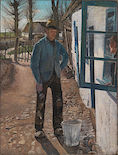
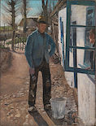

Tom gave up the brush with reluctance in his face, but alacrity in his heart. And while the late steamer Big Missouri Missouri, is a state located in the Midwestern United States. It is the 21st most extensive, and the 18th most populous of the fifty states. The state comprises 114 counties and the independent city of St. Louis. - Wikipedia worked and sweated in the sun, the retired artist sat on a barrel in the shade close by, dangled his legs, munched his apple, and planned the slaughter of more innocents. There was no lack of material; boys happened along every little while; they came to jeer, but remained to whitewashWhitewash cures through a reaction with carbon dioxide in the atmosphere to form calcium carbonate in the form of calcite, a reaction known as carbonation. - Wikipedia. By the time Ben was fagged out, Tom had traded the next chance to Billy Fisher for a kite, in good repair; and when he played out, Johnny Miller bought in for a dead rat and a string to swing it with -- and so on, and so on, hour after hour.
Missouri, is a state located in the Midwestern United States. It is the 21st most extensive, and the 18th most populous of the fifty states. The state comprises 114 counties and the independent city of St. Louis. - Wikipedia worked and sweated in the sun, the retired artist sat on a barrel in the shade close by, dangled his legs, munched his apple, and planned the slaughter of more innocents. There was no lack of material; boys happened along every little while; they came to jeer, but remained to whitewashWhitewash cures through a reaction with carbon dioxide in the atmosphere to form calcium carbonate in the form of calcite, a reaction known as carbonation. - Wikipedia. By the time Ben was fagged out, Tom had traded the next chance to Billy Fisher for a kite, in good repair; and when he played out, Johnny Miller bought in for a dead rat and a string to swing it with -- and so on, and so on, hour after hour.
And when the middle of the afternoon came, from being a poor poverty-stricken boy in the morning, Tom was literally rolling in wealth. He had besides the things before mentioned, twelve marblesA marble is a small spherical toy often made from glass, clay, steel, plastic or agate. Marbles can be used for a variety of games called marbles. They are often collected, both for nostalgia and for their aesthetic colors. - Wikipedia, part of a jews-harp, a piece of blue bottle-glass to look through, a spool cannon, a key that wouldn't unlock anything, a fragment of chalk, a glass stopper of a decanter, a tin soldier, a couple of tadpoles, six fire-crackers, a kitten with only one eye, four pieces of orange-peel, and a dilapidated old window sash.
He had had a nice, good, idle time all the while -- plenty of company -- and the fence had three coats of whitewash on it! If he hadn't run out of whitewashWhitewash cures through a reaction with carbon dioxide in the atmosphere to form calcium carbonate in the form of calcite, a reaction known as carbonation. - Wikipedia he would have bankrupted every boy in the village.